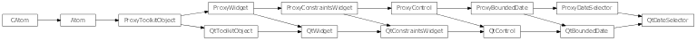
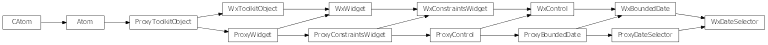

Bases: enaml.widgets.bounded_date.BoundedDate
A widget to edit a Python datetime.date object.
A DateSelector displays a Python datetime.date using an appropriate toolkit specific control. This is a geometrically smaller control than what is provided by Calendar.
A python date format string to format the date for display. If If none is supplied (or is invalid) the system locale setting is used. This may not be supported by all backends.
Whether to use a calendar popup for selecting the date.
A date selector expands freely in width by default.
A reference to the ProxyDateSelector object.

Bases: enaml.qt.qt_bounded_date.QtBoundedDate, enaml.widgets.date_selector.ProxyDateSelector
A Qt implementation of an Enaml ProxyDateSelector.
A reference to the widget created by the proxy.
Return the current date in the control.
| Returns: | result (date) – The current control date as a date object. |
|---|
Set the widget’s minimum date.
| Parameters: | date (date) – The date object to use for setting the minimum date. |
|---|
Set the widget’s maximum date.
| Parameters: | date (date) – The date object to use for setting the maximum date. |
|---|
Set the widget’s current date.
| Parameters: | date (date) – The date object to use for setting the date. |
|---|

Bases: enaml.wx.wx_bounded_date.WxBoundedDate, enaml.widgets.date_selector.ProxyDateSelector
A Wx implementation of an Enaml ProxyDateSelector.
A reference to the widget created by the proxy.
Return the current date in the control.
| Returns: | result (date) – The current control date as a date object. |
|---|
Set the widget’s minimum date.
| Parameters: | date (date) – The date object to use for setting the minimum date. |
|---|
Set the widget’s maximum date.
| Parameters: | date (date) – The date object to use for setting the maximum date. |
|---|
Set the widget’s current date.
| Parameters: | date (date) – The date object to use for setting the date. |
|---|
Set the widget’s date format.
| Parameters: | format (string) – A Python time formatting string. |
|---|
Note
Changing the format on wx is not supported. See http://trac.wxwidgets.org/ticket/10988